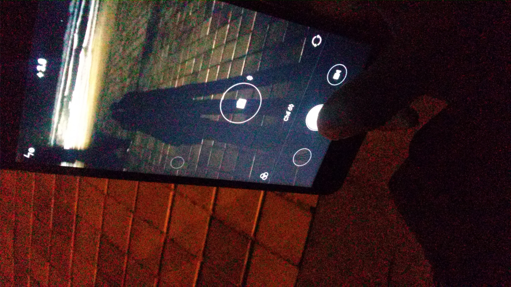
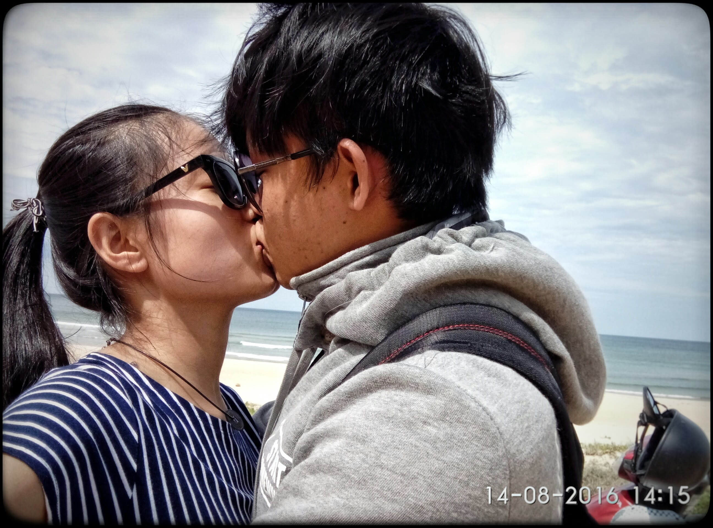

<html>

<head>
    <meta charset="UTF-8">
    <title>Chúc mừng sinh nhật em, người con gái tôi thương.</title>
    <link rel="stylesheet" href="https://unpkg.com/leaflet@1.0.3/dist/leaflet.css" />
    <script src="https://unpkg.com/leaflet@1.0.3/dist/leaflet.js"></script>
    <style>
        #mapid {
            height: 100%;
        }

    </style>
</head>

<body>
    <div id="mapid"></div>
    <div id="final"></div>
    <script>
        var mymap = L.map('mapid').setView([15.764200, 108.400884], 17);
        L.tileLayer(
            'http://server.arcgisonline.com/ArcGIS/rest/services/World_Imagery/MapServer/tile/{z}/{y}/{x}', {
                attribution: 'Cừu xinh <3 Ze ze',
                maxZoom: 17,
                minZoom: 12,
                id: 'your.mapbox.project.id',
                accessToken: 'your.mapbox.public.access.token'
            }).addTo(mymap);

        var love = L.icon({
            iconUrl: 'love.png',

            iconSize: [15, 15]
        });

        L.marker([15.764200, 108.400884], {
            icon: love
        }).addTo(mymap).bindPopup("<b>Chúc mừng sinh nhật!</b><br>Hôm nay là ngày sinh nhật lần thứ bao nhiêu rồi nhờ, 22 tuổi hả hay 23 tuổi =)), thôi kệ nó đi, nói chung là sinh nhật này ze có cừu bên cạnh, tuy không bên cạnh về khoảng cách địa lý nhưng gần nhau về tình cảm, về sự thương mến.<br><strong>Bây giờ z thử đi tìm nơi tiếp theo coi, z nghĩ là ở đâu</strong>, bật mí là phải đi lên, cái chỗ đó cũng cso hình trái tim đó.").openPopup();
        var cautinhyeu = L.marker([16.063494, 108.229529], {
            icon: love
        }).addTo(mymap).bindPopup("A.... tìm ra rồi, giỏi quá, vỗ tay pặc pặc, nơi tình yêu chớm nở là hồi nào hề, 30-6 hề, Ề đáng lý ra là <strong>nhà trọ</strong> của z đúng không, nhưng mà lần đầu tiên mà bảo nhà trọ của z thì kì quá nên là ở cầu Tình yêu cho nó oách, nó hoành tráng, nơi này có nhiều kỷ niệm quá ha, mỗi lần đi đâu ra ĐN chơi thì ít nhiều cũng phải ghé nơi đây, nó mang ý nghĩa thiêng liên đó chứ - cầu tình yêu - NƠI CHỨNG NHẬN TÌNH YÊU.<br><iframe src='image-slider.slider/cautinhyeu.html'></iframe><br><a href='javascript:void(0)' onclick='phongtro();'>Nhấn vào đây</a>");
        cautinhyeu.on('click', function() {

            mymap.setZoom(17);
            mymap.panTo([16.063494, 108.229529]);
        });

        function phongtro() {
            fly([16.049161, 108.239053], "Oh hay quá, đây là đâu, bà ngơ ngơ lắm, cho ngồi suy nghĩ 5 phút đó, nơi đây tính ra thì nhiều kỷ niệm thật ha, dù muốn hay không thì cũng xảy ra quá nhiều kỷ niệm ở nơi đâu rồi, dù ước muốn của bạn ấy là một bờ biển dài và rộng, cát trắng gió thổi...<br><iframe src='image-slider.slider/nhatro.html'></iframe><br><a href='javascript:void(0)' onclick='bien();'>Nhấn vào đây</a>")
        }

        function bien() {
            fly([16.070404, 108.245714],
                "Chỗ này bạn Ze thích lắm, thích nụ hôn đầu tiên phải là ở biển kia, nhưng mà thất bại rồi, ai bảo không nói trước làm chi, những lúc ra ĐN nhưng không biết tiếp theo phải đi đâu thì thường ghé nơi đây, đa phần đều ghé vào buổi tối thôi à, tại buổi tối cho nó đẹpppppp, vào SG này không có biển, có thì cũng nhớp nghí đen thui à, nhớ người yêu, nhớ biển.<br><br><a href='javascript:void(0)' onclick='caotoc();'>Nhấn vào đây</a>"
            );
        }

        function caotoc() {
            fly([15.797605, 108.404538],
                "Chỗ này lạ quá hê, vị trí không chính xác rồi, tại thằng Google nó chưa cập nhật bản đồ nên cũng không xác định được đúng vị trí nữa, cái đường cao tốc ni đi mòn bánh xe luôn rồi z hê, tại z mà c đi muốn mòn cái đường này luôn đó, bắt đền z đó chứ không phải giỡn chơi đâu<br><iframe src='image-slider.slider/caotoc.html'></iframe><br>Còn nữa đó z nhưng z coi thử có tìm ra hay không."
            );
            show([15.877073, 108.326178],
                "Ôi thông minh quá<br>C thích nơi này, lúc trước chưa yêu nhau thì 2 tụi mình cũng thường lui tới ở nơi này z nhỉ, hồi đó mà z ôm c là c yêu z liền liền luôn đó nghe, hí hí, bảo hoài mà k chịu ôm, có đứa còn bảo bạn bè ôm bình thường, t quất cho độp chừ, đi với thằng khác ôm ta xem -_-, Thăng Bình - Hội An - Đà Nẵng, những địa điểm quen thuộc quá Z nhỉ, mà vậy chúng ta còn đi đến phía <strong>Nam của Quảng Nam</strong> luôn đó chớ.<br><iframe src='image-slider.slider/hoian.html'></iframe><br><a href='javascript:void(0)' onclick='quangnam();'>Nhấn vào nhẹ vào đây cái đê.</a>"
            );
        }

        function fly(toaDo, noiDung) {
            mymap.flyTo(toaDo);
            return show(toaDo, noiDung);
        }

        function show(toaDo, noiDung) {
            var mar = L.marker(toaDo, {
                icon: love
            }).addTo(mymap).bindPopup(noiDung);
            mar.on('click', function() {
                mymap.setZoom(17);

                mymap.flyTo(toaDo);

            })
            return mar;
        }


        function quangnam() {
            alert("Hí, không có chi ở đây hết nớ, đi tìm đi, nơi cuối cùng đó.")
            show([15.6015091, 108.5426936],
                "Dưới này thì mình ít đi, tính cái dụ đi Tam Hải với đi Làng Bích Họa thì là 2 lần rồi nhờ, đi ở dưới ni cũng vui, vui rất chi là vui, đi đúng ngày sinh nhật của c nữa, có một bức hình lãng mạng nữa, ui chết mất thôi. Nơi đây thì hoang sơ, cũng là nơi chứng nhận tình yêu đó chứ không phải giỡn, đi xuống dưới này có cảm giác phượt đó chứ z nhờ.<br><br><a href='javascript:void(0)' onclick='home();'>Về nhà thôi</a> "
            )
        }


        function home() {
            var home=fly([15.757981, 108.395703],
                ""
            );
            home.on('click', function() {
            document.getElementById('mapid').style.display = 'none';
            document.getElementById('final').innerHTML = "<iframe src='phaohoa.html' width='100%' height='100%'></iframe>";
        })
        }

    </script>
</body>

</html>
